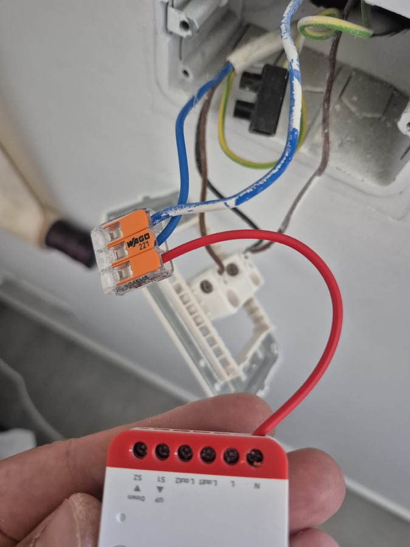

Jak zrobiłem inteligentną roletę z SONOFF MINI-ZBRBS
Roleta w moim biurze ma silnik elektryczny i zwykły łącznik góra/dół na ścianie. Do puszki za tym łącznikiem włożyłem SONOFF MINI-ZBRBS, mały moduł Zigbee do rolet. Łącznik na ścianie działa dokładnie tak jak wcześniej, a teraz roletę można też otwierać i zamykać z kafelka w ZigDash, w domu i z dowolnego miejsca.
Jak to działa
Silnik rolety ma dwa przewody zasilające: jeden kręci go w górę, drugi w dół. Łącznik na ścianie podaje fazę na jeden z nich. MINI-ZBRBS siedzi pomiędzy: dwa przewody silnika idą do jego wyjść (Lout1 i Lout2), a stary łącznik do jego wejść (S1 i S2). Gdy naciśniesz łącznik, moduł steruje silnikiem. Gdy ZigDash poprosi przez Zigbee, moduł też steruje silnikiem.
Moduł wie też, gdzie jest roleta, więc możesz ją ustawić na 50%, a nie tylko do końca w górę lub w dół. A ponieważ jest zasilany z sieci, działa jako router Zigbee, który wzmacnia twoją sieć.
Czego potrzebujesz
- SONOFF MINI-ZBRBS (łącznik rolet Zigbee). Zigbee2MQTT obsługuje go jako model
MINI-ZBRBS. - Silnik rolety z własnymi wyłącznikami krańcowymi: typowy silnik rurowy z czterema przewodami (neutralny, góra, dół, ochronny), który sam zatrzymuje się na górze i na dole. SONOFF podaje, że moduł obsługuje silniki do 1 A, a moduł sam zatrzymuje silnik po 2 minutach pracy w jednym kierunku.
- Przewód neutralny w puszce łącznika. Moduł potrzebuje przewodu neutralnego do własnego zasilania.
- Miejsce w puszce za łącznikiem. SONOFF zaleca puszkę o głębokości co najmniej 60 mm.
- Złączki z dźwigienkami (użyłem WAGO 221) i kilka krótkich kawałków przewodu.
- Hub Zigbee2MQTT w domu. Jeśli jeszcze go nie masz, zobacz Huby.
- ZigDash na telefonie (Google Play). Sterowanie roletą w domu jest darmowe. Sterowanie nią z dowolnego miejsca korzysta ze zdalnego sterowania ZigDash Pro: jednorazowy zakup, bez subskrypcji.
1. Podłącz moduł
Moduł ma sześć zacisków, opisanych na obudowie: N, L, Lout1, Lout2, S1 (góra) i S2 (dół). Nie ma zacisku ochronnego. Tak podłączyłem swój:
| Zacisk | Idzie do | W mojej puszce |
|---|---|---|
| N | Neutralny | Niebieskie przewody neutralne, połączone w WAGO 221, z krótkim przewodem stamtąd do N (zobacz uwagę poniżej o jego kolorze) |
| L | Faza | Zasilanie fazowe w puszce |
| Lout1 | Silnik: góra (SONOFF nazywa to „do przodu”) | Czarny przewód silnika |
| Lout2 | Silnik: dół („do tyłu”) | Brązowy przewód silnika |
| S1 | Wyjście „góra” łącznika | Jedno z wyjść starego łącznika |
| S2 | Wyjście „dół” łącznika | Drugie wyjście starego łącznika |
Stary łącznik zostaje. Jego zacisk wspólny dostaje fazę, jak wcześniej. Jego dwa wyjścia nie idą już do silnika: idą do S1 i S2 i mówią modułowi, w którą stronę ma kręcić. S1 i S2 to wejścia na napięcie sieciowe, nie niskie napięcie: zasil zacisk wspólny łącznika z tej samej fazy, z tego samego wyłącznika nadprądowego, co L.
Przewód ochronny: zostaw żółto-zielony przewód ochronny silnika połączony z przewodem ochronnym w puszce, tak jak był. Nie idzie on do modułu.
Góra i dół: kolory przewodów są w każdym domu inne. Zanim odłączysz łącznik, sprawdź, który przewód silnika zasilało jego wyjście „góra”, i oznacz go: ten idzie do Lout1. Jeśli je zamienisz, krok 4 pokazuje, jak to naprawić.



Sprawdź, czy każdy zacisk śrubowy jest dobrze dokręcony. Na razie zostaw moduł poza puszką, zaciskami od siebie: w następnym kroku go sparujesz.
2. Sparuj go z ZigDash
Do parowania moduł musi być pod napięciem, a jego przycisk wciśnięty, więc to jedyny moment, w którym pracujesz przy puszce pod napięciem. Naciskaj tylko przycisk, plastikowym narzędziem (tyłem długopisu), i niczego więcej nie dotykaj. Połóż moduł na czymś, co nie przewodzi prądu, tak żeby nie dotykał metalowej ramki łącznika.
- W ZigDash otwórz Urządzenia i stuknij Rozpocznij parowanie.
- Włącz wyłącznik nadprądowy. Przytrzymaj przycisk modułu przez około 5 sekund, aż niebieska dioda zacznie powoli migać. Moduł pozostaje w trybie parowania do 3 minut.
- ZigDash pokaże nowe urządzenie. Nadaj mu nazwę, którą rozpoznasz, na przykład Roleta biuro.
- Wyłącz wyłącznik nadprądowy. Złóż przewody, włóż moduł za łącznik, zamknij puszkę i ponownie włącz wyłącznik. Całą resztę robisz z telefonu i ze strony internetowej Zigbee2MQTT.
3. Powiedz mu, jaki masz łącznik
Moduł musi wiedzieć, jak zachowuje się twój łącznik na ścianie:
- Łącznik klawiszowy, który zostaje w pozycji góra, wyłączony lub dół (jak mój): tryb
edge. - Przycisk, który wraca, gdy go puścisz: tryb
pulse.
Najprościej zrobić to na stronie internetowej Zigbee2MQTT: otwórz urządzenie, przejdź do zakładki Exposes i ustaw external_trigger_mode na edge lub pulse. (Może to też zrobić przycisk modułu: szybkie potrójne naciśnięcie przełącza na kolejny typ łącznika, a dioda mignie trzy razy; może być trzeba to powtórzyć. To oznacza ponowne otwieranie puszki, więc użyłem Zigbee2MQTT.)
Potem przestaw łącznik na ścianie w górę, na wyłączony i w dół: roleta powinna ruszać i zatrzymywać się tak jak zawsze. Jeśli nie, tryb jest zły; ustaw ten drugi.
4. Skalibruj
Moduł uczy się, ile czasu zajmuje rolecie pełny ruch w górę i w dół. Bez tego potrafi otwierać i zamykać, ale nie potrafi ustawić pozycji takiej jak 50%.
- Na stronie internetowej Zigbee2MQTT, w zakładce Exposes urządzenia, ustaw
motor_travel_calibration_actionnastart_automatic. - Niech działa: roleta przejedzie do końca w jedną stronę, a potem w drugą. Nie dotykaj w tym czasie łącznika. Gdy skończy,
motor_travel_calibration_statuspokażeCalibrated.
(Na samym module tę samą kalibrację uruchamia przytrzymanie przycisku dłużej niż 10 sekund, aż dioda zacznie „oddychać”.) Jeśli automatyczna kalibracja się nie kończy (na przykład przy słabym silniku), SONOFF i Zigbee2MQTT opisują kalibrację ręczną: sam wskazujesz pełne otwarcie i pełne zamknięcie.
Góra i dół zamienione? Wyłącz wyłącznik nadprądowy, zamień przewody na Lout1 i Lout2, a potem skalibruj ponownie. Opcja invert_cover w Zigbee2MQTT odwraca tylko raportowaną pozycję; nie zmienia kierunku obrotów silnika.
5. Kafelek rolety w ZigDash
- Na pulpicie stuknij Dodaj z urządzenia i wybierz roletę.
- Kafelek ma przyciski Otwórz, Stop i Zamknij oraz rząd gotowych pozycji (domyślnie 0, 25, 50, 100). W ustawieniach kafelka możesz włączyć suwak pozycji.
- Z dowolnego miejsca: w ZigDash Pro włącz zdalne sterowanie, a ten sam kafelek będzie działał poza domem, bez otwierania portu na routerze i bez miesięcznej opłaty.
Łącznik na ścianie i aplikacja działają obok siebie: łącznik jest nadal dla każdego, kto nie ma aplikacji, a kafelek działa dalej niezależnie od tego, czy roletę ostatnio poruszono ręcznie, czy z telefonu.